ChatTS Time Encoder 架构更新调研
调研更新：2026-07-28；目标：只替换时间序列编码架构，保持 patch、token 数、文本占位符替换、LLM 和训练任务不变。 图像说明：本报告中的论文图均从原始论文 PDF 裁切，未重绘；图号、PDF 页码和链接见每图下方。
0. 结论先行
ChatTS 的输入确实是时间序列，但原始 time encoder 更准确地说是共享的逐 patch MLP 投影器：一个 patch 内部会经过非线性变换，不同 patch 在进入 LLM 之前没有信息交换。因此，这次更新真正应该补的是 pre-LLM temporal mixing，而不是简单增加 MLP 层数。
在“只换架构、不要复杂系统”的约束下，我的排序是：
| 排位 | 方案 | 核心时间机制 | 能否保持每 patch 一个 token | 工程复杂度 | 结论 |
|---|---|---|---|---|---|
| 1 | ModernTCN-lite | 大核 depthwise Conv1d | 是 | 低 | 最稳妥主方案 |
| 2 | InceptionTime-lite | 多尺度并行 Conv1d | 是 | 低 | 2026 直接 LLM 证据支持的方案 |
| 3 | P-sLSTM | patch 级递归状态 | 是 | 中 | 更新感更强的正式论文方案 |
| 4 | Bi-Mamba+ Patch | 双向 selective state scan | 是 | 中高 | 高潜力，但依赖和发表状态有风险 |
| 对照 | PatchTST-style | 全局 self-attention | 是 | 低中 | 必须保留的强对照 |
| 边界 | TimeMixer++ | 多尺度时频混合 | 不能直接保证 | 高 | 不适合本轮 |
| 边界 | ITFormer | 问题条件化跨模态融合 | 会改融合接口 | 中高 | 适合下一阶段，不是单纯换 encoder |
最推荐的最小实验矩阵是：
ChatTS-MLP
vs PatchTST-style
vs ModernTCN-lite
vs InceptionTime-lite
vs P-sLSTM
资源允许时再加 Bi-Mamba+。
这里的排序是对 ChatTS 当前接口的适配排序，不是跨论文性能排行榜。现有论文没有在完全相同的 ChatTS QA/推理训练设置下直接比较这些编码器。
1. ChatTS 原始 MLP-Patch：它为什么不算完整的时序编码器
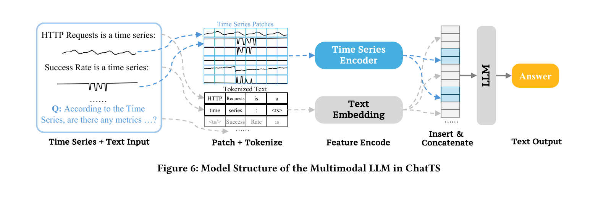
原图来源：ChatTS: Aligning Time Series with LLMs via Synthetic Data for Enhanced Understanding and Reasoning，Figure 6，PDF 第 5 页（论文页码 2389），PVLDB 2025。
原图怎么读
- 左侧把时间序列和文本问题放在同一输入中。
- 时间序列被切成固定大小 patch；文本走 tokenizer。
- time-series patch 经过 Time Series Encoder，文本 token 经过 Text Embedding。
- 两类 embedding 按占位符位置拼回同一个 token 序列，再送入 LLM。
图里没有画出 Time Series Encoder 的内部结构，但论文 §3.4.1 明确写的是：每个 patch 由一个简单的 5 层 MLP 编码。公开实现同样先计算
[ N_i=\lceil L_i/p\rceil ]
再补齐最后一个 patch，把所有 patch 独立送进共享 MLP，最后返回 features 与 patch_cnt。
真正的结构缺口
假设一条序列被切成 (p_1,p_2,\ldots,p_N)，原编码器实际执行的是
[ e_i=\mathrm{MLP}(p_i+\mathrm{pos}_i). ]
这里没有 (e_i=f(p_1,\ldots,p_N)) 这种跨 patch 关系。趋势、周期、前后异常呼应等依赖只能等 patch token 进入 LLM 后再学。
因此它当然处理的是时序数据，但更精确的命名是：
time-series patch projector，而不是显式 temporal encoder。
这次替换必须保持的接口
- patch size 与 stride 不变，建议继续使用 8；
- 每条样本仍输出 (N_i=\lceil L_i/8\rceil) 个 token；
- 保留原
patch_cnt； - 保留原
<ts> ... <ts/>token replacement； - 不改 LLM、不改训练数据、不增加新的预训练目标；
- 新编码器先在较窄的 (d_{ts}) 空间建模，再用一次线性层投影到 (d_{LLM})。
2. 推荐一：ModernTCN-lite
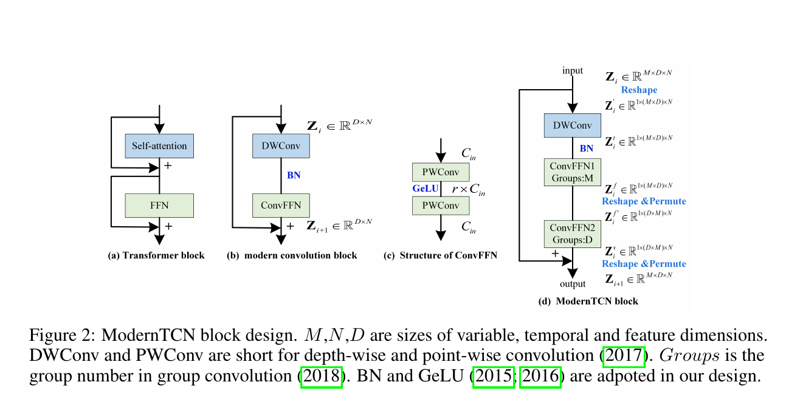
原图来源：ModernTCN: A Modern Pure Convolution Structure for General Time Series Analysis，Figure 2，PDF 第 3 页，ICLR 2024 Spotlight。
原图怎么读
Figure 2 从左到右给出了 ModernTCN block 的设计过程：
- Transformer block 用 self-attention 做 token mixing，再用 FFN 做 feature mixing。
- modern convolution block 用 DWConv 替代 self-attention，用 ConvFFN 替代普通 FFN。
- ConvFFN 由 point-wise convolution、GeLU 和第二个 point-wise convolution组成。
- ModernTCN block 先 reshape，把大核 DWConv 放在时间维 (N) 上；随后再次 reshape/permute，用分组 ConvFFN 分别混合变量与特征。
对 ChatTS 最重要的是 Figure 2(b) 的思想：
DWConv 负责沿时间 token 交换信息，ConvFFN 负责每个 token 内的特征变换。
这正好补上原始 MLP 没有跨 patch temporal mixing 的缺口。
为什么它是第一选择
- 原生时间序列论文，不是把图像 backbone 生硬移植过来；
- 大核 Conv1d 能覆盖多个相邻 patch，计算复杂度随 token 数近似线性；
- 只依赖标准 PyTorch Conv1d、Norm、GELU；
- 没有 Mamba 自定义 CUDA，也没有 FFT、动态周期选择或多模态新桥接；
- ModernTCN 原论文覆盖预测、分类、插补和异常检测等多类时序任务。
如何最小化接入 ChatTS
原论文完整模型包含多 stage 和下采样。为了保持 ChatTS 的 token 数，不能原样照搬；应明确命名为 ModernTCN-lite adaptation：
Patchify(p=8, stride=8)
→ Linear(8 → d_ts=512)
→ [Large-kernel DWConv1d(k=7 或 9)
→ Norm
→ ConvFFN
→ Residual] × 4
→ Linear(512 → d_LLM)
→ 原 patch_cnt / token replacement
关键约束是卷积使用 same padding，不做 temporal downsampling，输入 (N) 个 patch，输出仍是 (N) 个 token。
风险与边界
- “lite” 是本项目适配，不是原论文中的官方变体；
- 如果 patch 数很少，大到 51 的卷积核没有必要，建议先从 7/9 开始；
- ChatTS 常把多条单变量序列分别插入文本，因此第一版不要额外引入复杂的跨变量 mixing。
**我的判断：**这是最容易实现、最容易做公平消融、最不容易把论文故事搞复杂的主方案。
3. 推荐二：InceptionTime-lite——旧架构，但有 2026 年最贴近问题的直接证据
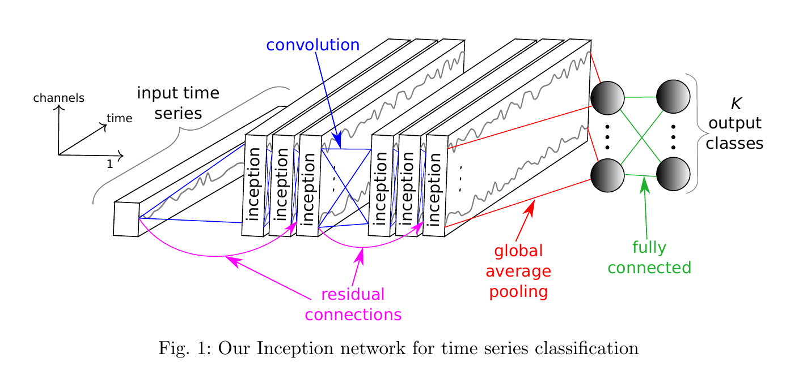
原图来源：InceptionTime: Finding AlexNet for Time Series Classification，Figure 1，PDF 第 5 页；正式发表于 Data Mining and Knowledge Discovery 2020。
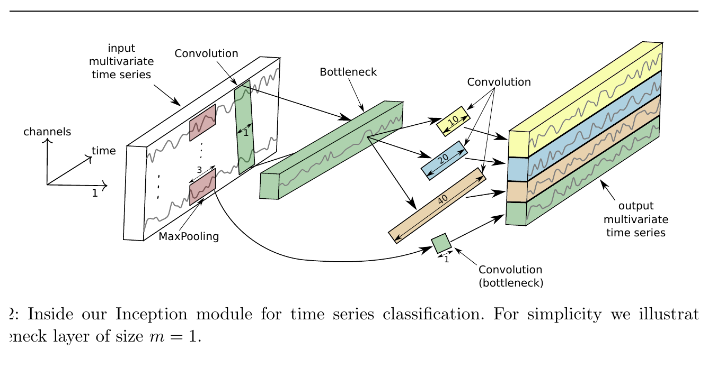
同一论文 Figure 2，PDF 第 6 页：Inception module 内部结构。
原图怎么读
Figure 1 展示了完整 InceptionTime：
- 多个 Inception module 串联；
- 每三个 module 加一次 residual connection；
- 最后做 global average pooling；
- 全连接层输出分类结果。
Figure 2 展示单个 Inception module：
- 先用 (1\times1) bottleneck 压缩通道；
- 并行运行多种长度的 1D 卷积，原图示例为 10、20、40；
- 另设 MaxPooling + bottleneck 分支；
- 把所有分支按 feature 维拼接。
它与 ModernTCN 的差别非常直观：
- ModernTCN：一个大核逐层扩大时间感受野；
- InceptionTime：多个不同尺度的卷积核并行看短、中、长模式。
为什么 2026 年仍值得认真做
2026 年预印本 An Exploratory Study to Repurpose LLMs to a Unified Architecture for Time Series Classification 专门比较了 Inception、MLP、Transformer、CNN、ResNet 与冻结 LLM 的组合：
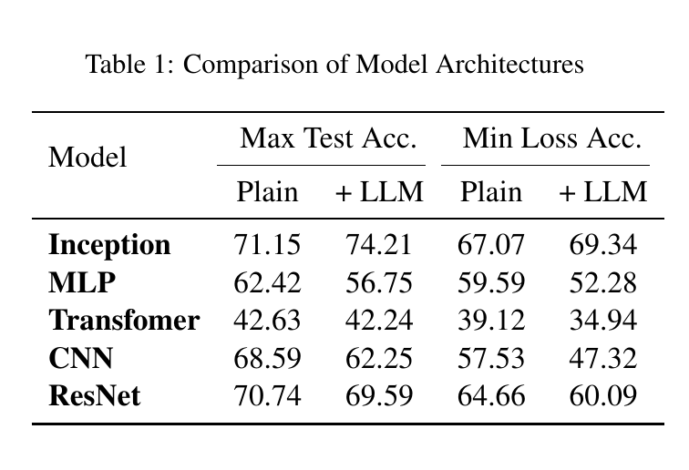
原表来源：An Exploratory Study to Repurpose LLMs to a Unified Architecture for Time Series Classification，Table 1，PDF 第 4 页，arXiv 2026。
在该论文自己的 UCR 分类设置中，Inception 是唯一在两种报告口径下接入 LLM 后都提升的编码器家族。这个结果不能直接推出它在 ChatTS QA 上也会更好，但它是目前最贴近“时间序列 encoder + LLM，究竟选什么 backbone”这一问题的 2026 直接证据。
如何最小化接入 ChatTS
原始 InceptionTime 的 global average pooling 会把时间维压成一个向量，不能直接用于 ChatTS。最小改法是：
Patchify(p=8)
→ Linear(8 → d_ts)
→ [Inception1D(k=3/5/9) + MaxPool branch + Residual] × 2 blocks
→ 保留每个位置的 feature，不做 Global Average Pooling
→ Linear(d_ts → d_LLM)
所有并行分支使用 same padding，因此输入 (N) 个 patch，拼接并投影后仍输出 (N) 个 token。
风险与边界
- InceptionTime 本身不是新论文，新的只是 2026 年在 LLM 混合架构中的支持证据；
- 原论文对 raw timestep 做卷积，本报告建议对 patch token 轴做卷积，因此必须写成 InceptionTime-style/lite adaptation；
- 多分支卷积的显存和 kernel 调度比单个 ModernTCN block 略复杂，但仍远低于 TimeMixer++。
**我的判断：**如果你想在 2026 年的论文里体现“我们不是只凭感觉换 backbone”，它是很有价值的第二方案；如果只实现一个，仍优先 ModernTCN-lite。
4. 推荐三：P-sLSTM
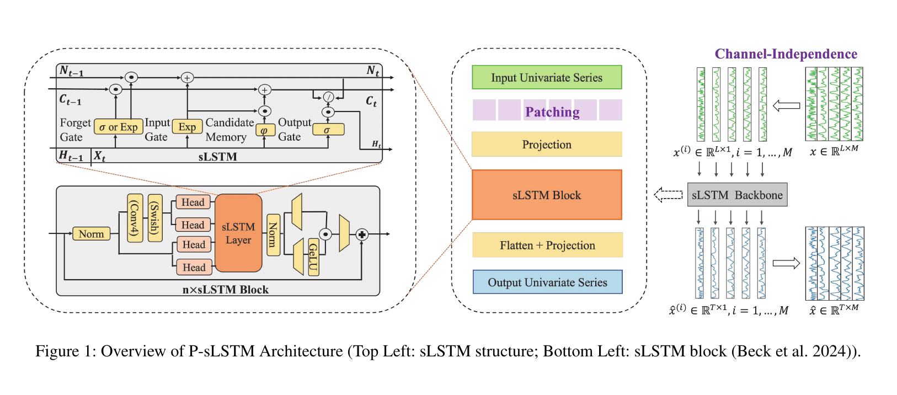
原图来源：Unlocking the Power of LSTM for Long Term Time Series Forecasting，Figure 1，PDF 第 4 页，AAAI 2025。
原图怎么读
右侧先把多变量序列按 channel 拆成多条单变量序列，共享同一个 sLSTM backbone。中间主路径是：
Input Univariate Series
→ Patching
→ Projection
→ sLSTM Block
→ Flatten + Projection
→ Output Univariate Series
左上角是 sLSTM cell，除了 hidden state (H_t) 与 cell state (C_t)，还包含 normalizer state (N_t)。输入门和遗忘门可采用指数形式，增强状态更新范围。左下角展示 sLSTM block 内部的 Norm、卷积、多个 head、sLSTM layer、门控和 residual。
它与 MLP 的本质区别
MLP 对每个 patch 独立执行同一函数；P-sLSTM 的第 (t) 个 patch 会读取前一个 patch 的状态：
[ (h_t,c_t,n_t)=\mathrm{sLSTM}(x_t,h_{t-1},c_{t-1},n_{t-1}). ]
因此时间方向和信息流都非常明确，适合解释“为什么这是真正的时序编码”。
如何最小化接入 ChatTS
- 保留 patching 与 projection；
- 使用 2-3 层 sLSTM；
- 删除原 forecasting 的
Flatten + Projection； - 保留每个 patch 对应的 hidden state (h_1,\ldots,h_N)；
- 最后统一投影到 (d_{LLM})。
风险与边界
- xLSTM/sLSTM 依赖比标准 Conv1d 重；
- 递归状态的并行性不如卷积或 attention；
- 指数门控需要关注数值稳定性；
- 原论文是 forecasting，不是 QA。
**我的判断：**适合做“2025 架构更新”的正式论文方案，方法解释性很好，但工程优先级排在两个卷积方案之后。
5. 条件推荐：Bi-Mamba+ Patch Encoder
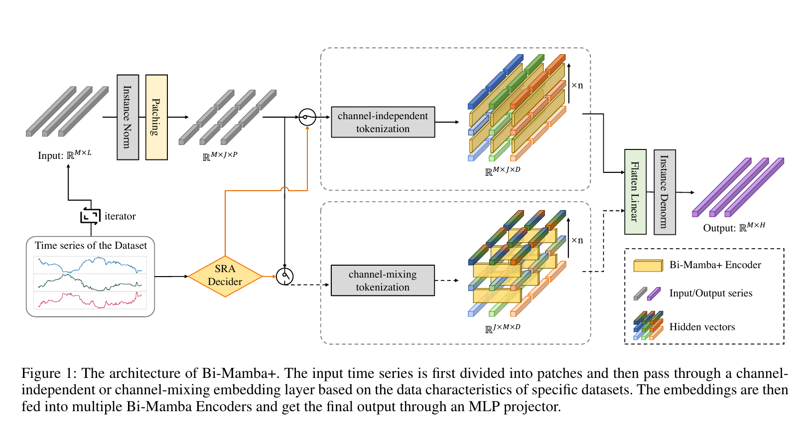
原图来源：Bi-Mamba+: Bidirectional Mamba for Time Series Forecasting，Figure 1，PDF 第 3 页，arXiv v3。
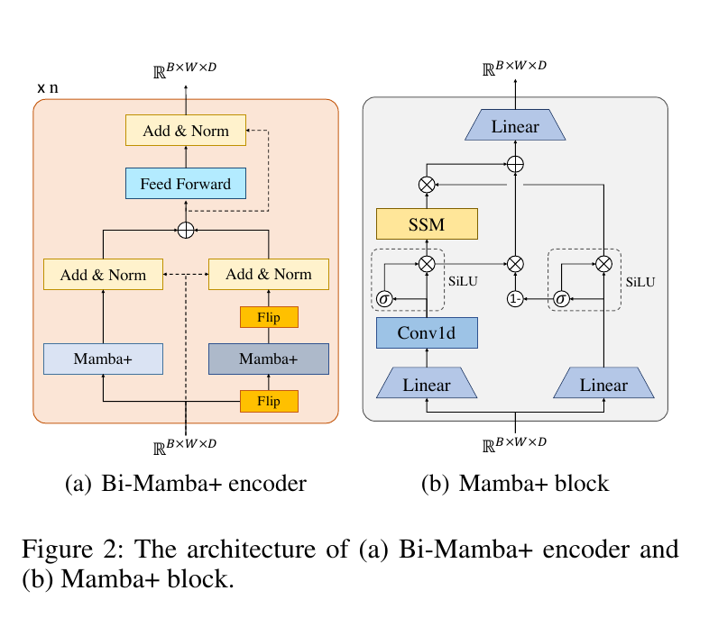
同一论文 Figure 2，PDF 第 5 页：Bi-Mamba+ encoder 与 Mamba+ block。
原图怎么读
Figure 1 先做 Instance Norm 和 Patching，再由 SRA Decider 在两种 tokenization 中选择：
- channel-independent：每个变量独立，patch 是时间 token；
- channel-mixing：混合变量维信息。
之后堆叠多个 Bi-Mamba+ Encoder，最后 Flatten Linear 产生预测。
Figure 2(a) 画出了双向结构：一条分支正向处理，一条分支先 Flip 再处理，反向结果翻转回来后相加，并经过 FFN 与 Add&Norm。Figure 2(b) 在普通 Mamba 的 SSM 分支外加入互补的 forget gate，用于组合新特征与历史特征。
为什么接口很合适
在 channel-independent 路径中，编码器内部张量是 (B\times W\times D)，其中 (W) 就是 patch token 数。删除最后的 forecasting head 后，可以直接把这 (W) 个 hidden vectors 投影成 ChatTS token。
最小接入方式
Patchify(p=8)
→ Linear(8 → d_ts)
→ [Forward Mamba+ + Backward Mamba+ + Add&Norm + FFN] × 2
→ Linear(d_ts → d_LLM)
为什么只做条件推荐
- 本轮检索仍只确认到 arXiv/CoRR 版本，不能写成正式会议论文；
- 忠实实现 Mamba+ 需要修改后的 selective scan/CUDA；
- 如果只使用标准双向 Mamba，应明确写成 “Bi-Mamba+-style adaptation”；
- 对短 patch 序列，Mamba 的线性长序列优势可能不明显。
**我的判断：**有资源和 CUDA 经验时可作为高潜力附加组，不建议把它作为唯一主线。
6. 必须对照：PatchTST-style Encoder
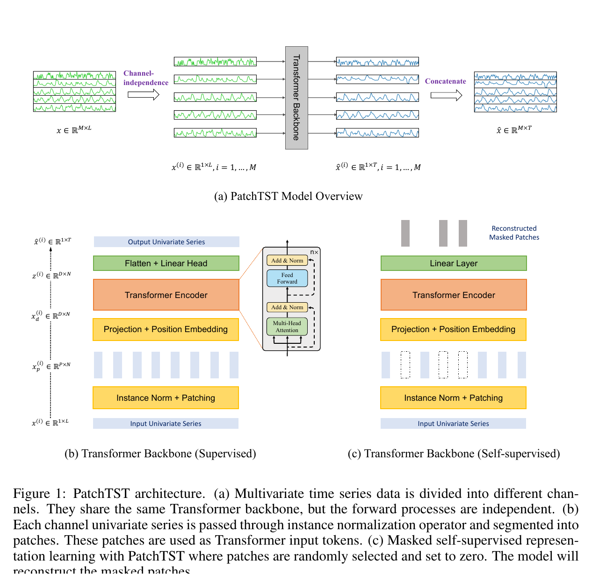
原图来源：A Time Series is Worth 64 Words: Long-term Forecasting with Transformers，Figure 1，PDF 第 4 页，ICLR 2023。
原图怎么读
Figure 1(a) 先把多变量时间序列拆成多个 channel，各 channel 独立共享同一个 Transformer backbone。Figure 1(b) 是监督预测路径：
Instance Norm + Patching
→ Projection + Position Embedding
→ Transformer Encoder
→ Flatten + Linear Head
Figure 1(c) 是遮盖 patch 的自监督重建路径。
为什么它必须存在
PatchTST 与 ChatTS 的 patch 接口几乎完全同构。删除 Flatten/forecasting head，保留 Transformer Encoder 的 (N) 个输出 token 即可。
它回答一个非常干净的问题：
给 patch 加最普通的全局 self-attention，是否已经足以改善 ChatTS 的趋势、周期和跨段关系理解？
如果 ModernTCN、InceptionTime 或 P-sLSTM 没有明显超过这个基线，就很难证明更特殊 mixer 的必要性。
最小接入方式
Patchify(p=8)
→ Linear(8 → d_ts) + Position Embedding
→ Transformer Encoder × 2-4
→ Linear(d_ts → d_LLM)
风险是 self-attention 复杂度为 (O(N^2))，但 ChatTS 已经 patchify，(N) 通常不会像 raw timestep 那样大。它不够新，所以适合作为强对照，不适合作为 2026 论文的唯一架构故事。
7. 两个边界方案：为什么这轮不建议做
7.1 TimeMixer++：原生时序且很强，但已经不是“简单换 encoder”
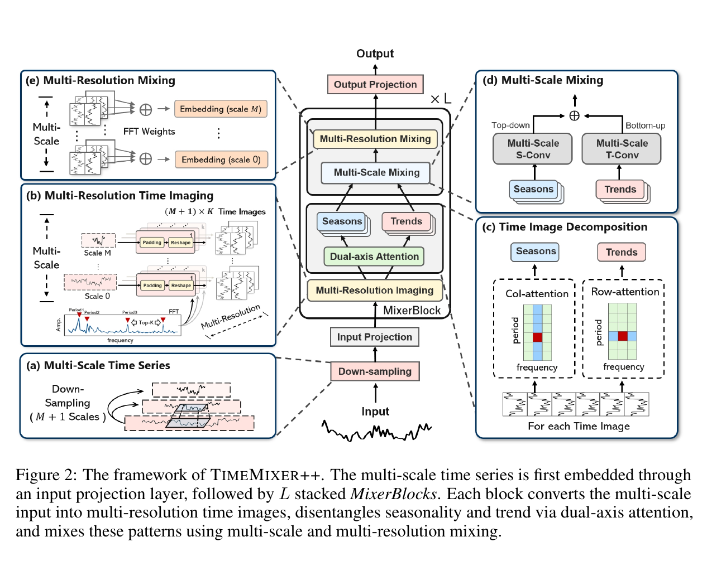
原图来源：TimeMixer++: A General Time Series Pattern Machine for Universal Predictive Analysis，Figure 2，PDF 第 4 页，ICLR 2025。
原图包含五部分：
- 多尺度时间序列下采样；
- 基于 FFT 周期的 Multi-Resolution Time Imaging；
- 双轴 attention 分解趋势与季节；
- top-down / bottom-up Multi-Scale Mixing；
- Multi-Resolution Mixing。
它的能力来自整套时频系统。接入 ChatTS 会遇到：
- 多尺度分支输出长度不同；
- 需要重新定义 (N) 个 LLM token 如何对齐；
- FFT/Top-K 周期与双轴 attention 引入多个新超参数；
- 裁掉大部分模块后不能再声称复现 TimeMixer++。
因此它适合未来完整方法升级，不符合本轮“只替换几层 MLP”的约束。
7.2 ITFormer：最接近 TS-QA，但它改的是跨模态桥接
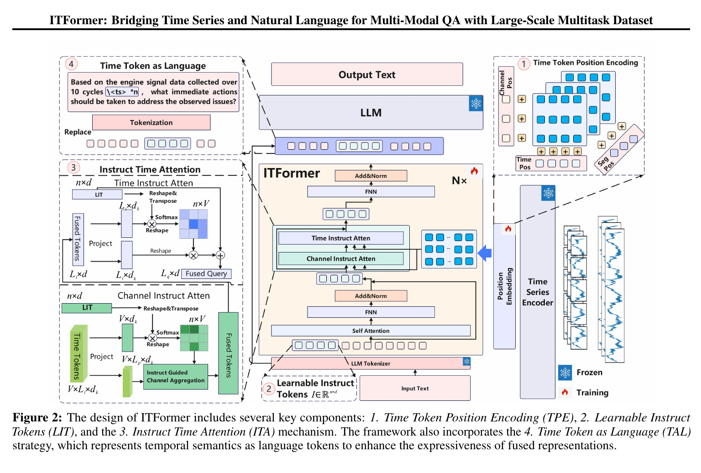
原图来源：ITFormer: Bridging Time Series and Natural Language for Multi-Modal QA with Large-Scale Multitask Dataset，Figure 2，PDF 第 4 页，ICML 2025。
ITFormer 的四个关键模块是：
- Time Token Position Encoding；
- Learnable Instruct Tokens；
- Channel/Time Instruct Attention；
- Time Token as Language。
右侧时间序列先经过冻结的 time-series encoder，文本问题生成 instruct tokens，再由问题条件化 attention 融合时间与文本特征，最后送入冻结 LLM。
它与 ChatTS 的差异不是“用什么 temporal backbone”，而是“如何让问题主动查询时间特征”。如果本轮同时改 encoder 与融合桥接，实验收益无法归因到单一架构替换。
因此 ITFormer 非常值得写进 Related Work，也适合下一阶段研究，但不应放进本轮主实验。
8. 最小、干净、可解释的实现建议
8.1 统一接口
所有可替换编码器都实现：
features, patch_cnt = time_encoder(timeseries, valid_lengths)
并满足：
features.shape == [sum(patch_cnt), d_llm]
patch_cnt[i] == ceil(valid_length[i] / 8)
8.2 统一容量
建议统一：
patch_size = stride = 8d_ts = 512- 最终
Linear(512, d_llm) - 深度 2-4 blocks
- same padding，禁止改变 token 数
- 尽量匹配参数量，而不是让某一模型直接在 4096 维堆层
8.3 公平对照
固定以下所有因素：
- 同一 ChatTS 数据；
- 同一 LLM 与 tokenizer；
- 同一训练步数、batch、优化器和学习率搜索预算；
- 同一 patch normalization；
- 同一 token replacement；
- 同一 loss；
- 不给某个架构额外预训练。
8.4 最重要的消融维度
| 组别 | 跨 patch 信息流 | 代表模型 |
|---|---|---|
| No mixing | 无 | ChatTS MLP |
| Local/multi-scale convolution | 局部到长感受野 | ModernTCN-lite / InceptionTime-lite |
| Global all-to-all | 全局注意力 | PatchTST-style |
| Recurrent state | 顺序状态传播 | P-sLSTM |
| Selective state scan | 双向选择性状态 | Bi-Mamba+ |
这使论文主张能够收敛为：
在 LLM 之前显式建模跨 patch temporal dependencies，是否比独立 patch projection 更适合时间序列理解与推理？
9. 最终建议
如果只做一个新架构：ModernTCN-lite。
如果做一篇结构干净的论文：
- ChatTS-MLP：原基线；
- PatchTST-style：全局 attention 对照；
- ModernTCN-lite：主方法；
- InceptionTime-lite：多尺度卷积与 2026 LLM 证据；
- P-sLSTM：现代递归对照；
- Bi-Mamba+：资源允许时追加。
论文里不要写“换成某架构必然优于 MLP”。在真正跑完 ChatTS 对照实验前，当前结论只是：
- ModernTCN-lite 的接口适配性、工程简单度和正式时序证据最好；
- InceptionTime-lite 有一条2026 年最贴近 encoder+LLM 的直接经验信号；
- P-sLSTM 的时序状态解释最明确；
- Bi-Mamba+ 的长依赖机制最现代，但风险最高；
- PatchTST 是不可省略的公平对照。
单纯“把 MLP 换成另一个 backbone”通常不足以构成强创新。更稳的论文叙事是：先指出 ChatTS 的 pre-LLM temporal mixing 缺口，再系统比较不同 mixer 范式，并用相同 token 接口控制变量验证。